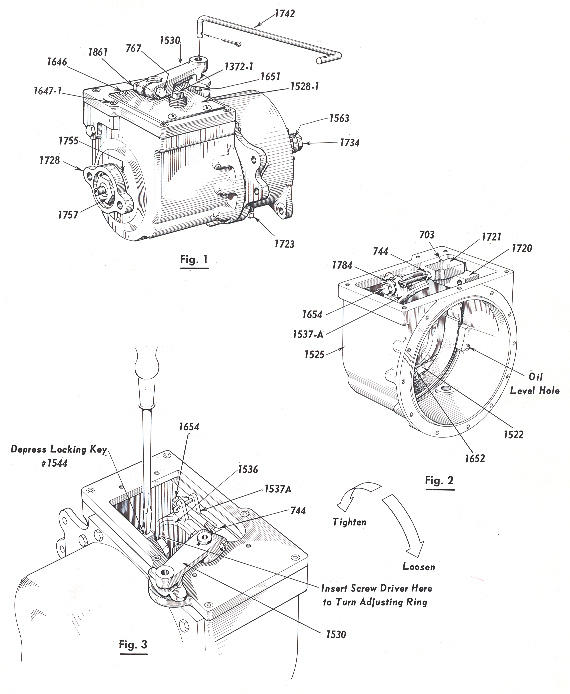
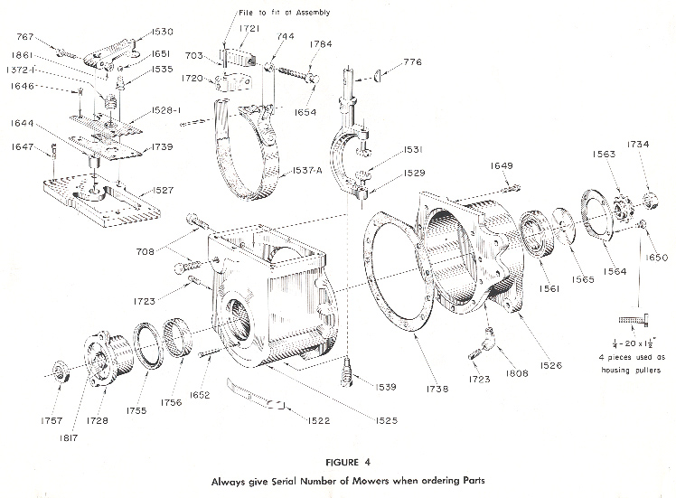
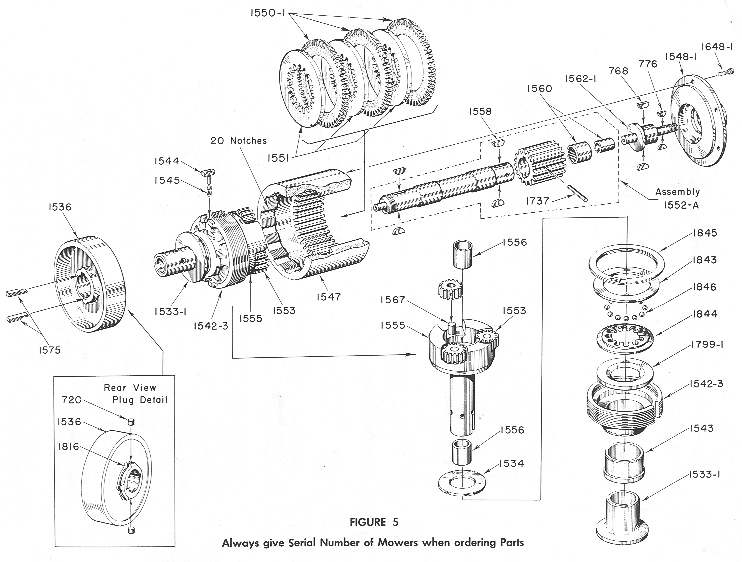

PARTS REORDERING
AND
Always give Serial Number of Mowers when ordering Parts
1961
GENERAL INSTRUCTIONS
FOR DISASSEMBLING, REASSEMBLING, AND REPAIRING
REVERSE GEAR TRANSMISSIONS ON LOCKE TRIPLEX MOWERS



1. The tractor clutch on these machines is a multiple disc type with a planetary reverse gear completely enclosed and running in an oil bath.
LUBRICATION
2. The oil level should be checked at regular intervals by removing the oil level pipe plug # 1723 at the front side of the transmission case. The oil should be drained after the first 10 hours operation (drain plug is located at the hottom of the transmission), and refilled to overflow at the oil level plug #1723 with Type A transmission oil. Additional changes of oil should be made after each 100 hours of operation.
3. The transmission requires only 12 ounces of oil and is equipped with a breather #1372-1 located on the cover plate #1528-1.
4. IMPORTANT - If the transmission is always run with clean oil, it will outlast the rest of the machine.
FORWARD CLUTCH ADJUSTMENT
5. If the machine shows evidence of slippage as the clutch discs wear, it will be necessary to take up on the adjustment as follows:
6. The Tractor Clutch Lever # 1826 should be in the neutral position 1/8" before hitting the stop of the # 1819 bracket shown on plate 14 in the parts book. This adjustment can be made with the ~1626 Rod End.
7. It is necessary to lift this lever up over the stop to go into reverse. This pause eliminates the shock on the tractor chain, ball bearings, etc.
8. The motor should be stopped while making adjustments. Make certain that the clutch lever #1530 is in the netitral positionwith the ball check #1651 in the groove of this lever.
9. Remove the four screws #1646 that hold the steel cover plate # 1528-1 to the top of the transmission and use caution in removing the plate not to damage the gasket # 1739.
10. Roll the machine forward or backward unit the locking key #1544 is on top. Use a screw driver as shown in Fig. 3 to depress the key which locks the adjusting ring in one of the "20" notches cut in the #1547 internal gear.
11. Turn the adjusting ring in the direction of the arrow as shown in Fig. 3 and allow the # 1544 key to snap into the next notch cut in the # 1547 internal gear.
12. Adjust only one notch at a time.
REVERSE BRAKE BAND ADJUSTMENT
13. To adjust the wear of the reverse brake band, loosen the jam nut #744 on the brake bolt #1654 and take up about one full turn of the brake bolt until the brake drum #1536 still turns freely when the clutch lever #1826 is in the neutral position, and the clutch shifting fork has moved the flange of the #1533-1 clutch cone just up to the hub of the #1536 brake drum. Then the brake band should start to grip the drum when the clutch lever #1826 is pulled back for the reverse to operate.
14. If the mower has a tendency to crawl in either direction when in the neutral position, it is evident that either the clutch or the brake band is set up too tight.
15. All adjustments on the machine should be made when the transmission is warm.
GENERAL OVERHAUL
16. The following instructions cover the replacement of broken brake band assemblies, replacement of friction discs, and major repairs not covered by the adjustment instructions.
17. While the transmission is still on the machine, loosen the Tractor Sprocket Lock Nut # 1734 before removing the Tractor Chain as this prevents the turning of the Sprocket Stud while removing the Lock Nut. This does not have to be done if only replacing the Reverse Brake Band # 1537-A.
18. The next step is to remove the Transmission unit from the machine as outlined on Page 3 of the orange instruction booklet.
DISASSEMBLY OF THE REVERSE GEAR TRANSMISSION
19. Drain oil from the Transmission by removing # 1723 Pipe Plug at the bottom of the Transmission (Fig. 1).
20. Engage the forward clutch with the Clutch Lever # 1530. This locks the internal unit into one solid unit from the Input Shaft Driver # 1728 to the Tractor Clutch Sprocket #1563.
21. Loosen the Input Shaft Lock Nut #1757 on the input end of the Sun Gear Shaft #1557-1 as shown in Fig. 1. To do this, hold the Transmission in a vise by the #1563 Sprocket on the Output end with 2 wood blocks.
22. After removing this nut, the Input Shaft Driver # 1728 can be pulled off the Input Shaft by using a wheel pulley or two screw drivers as pries. Be careful not to damage the case of the Oil Seal #1755 (Fig. 4).
23. Remove the Woodruff Key # 1558 which is assembled with the Input Shaft #1557-1 and the Driver #1728, a slide fit on the Input Shaft #1557-1 (Fig. 5).
24. Remove the Clutch Lever #1530 which is held with a Locking Bolt #767 and Woodruff Key # 776 (Fig. 4).
25. Pick out the Clutch Lever Ball Check #1651 and its Spring #1535. Remove Transmission Cover Plate # 1528-1 and its Gasket #1739. Next, remove the Trans-mission Gear Housing Cover #1527 which is held by 6 Socket Head Cap Screws #1647-1 (Fig. 4).
26. Remove the Cotter Pin from the Reverse Brake Band Assembly # 1537-A and lift out the Gear Rack #1721 and Take-up Bolt #1654 and Washer #1784 (Fig. 4).
27. Remove the Clutch Fork Lower Fulcrum Stud # 1539 which has a hexagon head. This allows the Clutch Fork #1529 to be lifted out with the two Clutch Fork Trunnion Dogs #1531 as shown in Fig. 4.
28. Remove the 11 Transmission Housing Cap Screws # 1649 which hold the two halves #1525 and #1526 of the Transmission Case together. A Neoprene Gasket # 1738 is used as a seal between them (Fig. 4).
29. The Reverse Gear Housing Input Side Assembly #1525, with its Brake Band Assembly #1537-A, the Oil Seal #1755, and the Input Needle Bearing #1756 can now be removed and examined. If it is necessary to replace the Brake Band Assembly #1537-A, remove the two bolts #708 that fasten the Brake Band Anchor Block # 1720 to the Input Gear Housing #1525 as shown in (Fig. 4).
30. The Reverse Gear Housing Output Side #1526 and all of the internal mechanisms are now separated as a sub-assembly. To disassemble this unit, remove the Tractor Sprocket #1563, Key #776, the Output Ball Bearing Retainer Plate #1564, and the Ball Bearing Clamping Washer #1565 (Fig. 4).
31. Then insert four, 1/4 - 20 Screws Threaded 1 1/2" in the four holes where the Retainer Screws # 1650 fastened the Retainer Plate # 1564 to the Gear Housing #1526 and use them as a wheel puller against the Internal Gear Flange#1548-1. This will push the assembly out of the Output Ball Bearing #1561 and the whole internal mechanism will be left as a unit (Fig. 4).
32. A clip 3/8" wide or some elastic bands can now be placed on the Planetary Gear Carrier #1555 to limit the movement of the Clutch Cone #1533-1 which will prevent the Clutch Balls from dropping out of their Cage when the Adjusting Ring # 1542-3 is screwed out of the Internal Gear #1547, Fig. 5.
33. To replace the Clutch Discs #1550-1, remove 6 Socket Head Cap Screws #1648-1 and lift off the Internal Gear Flange #1548-1. Now pick out the 3 Friction Clutch Discs #1550-1 which have external gear teeth and the 3 Steel Clutch Discs #1551 with internal gear teeth (Fig. 5).
34. The Sun Gear Shaft Assembly # 1552 can now be pulled out. If it sticks, examine the Sun Gear Shaft on the Input end where the Input Shaft Driver # 1728 may have thrown up a burr and file down as this shaft should slide out easily from the gear train and carrier #1555. Also pick out the 3 Planetary Pinions #1553 (Fig. 5).
35. Depress the Locking Dog Key #1544 as shown in Fig. 5 and unscrew the Internal Gear # 1547 from the Clutch Adjusting Ring #1542-3. Remove the #1544 Locking Dog Key and its Spring #1545 which will snap out suddenly when the Internal Gear is unscrewed to a point where the key is completely exposed.
36. To examine the Clutch Adjusting Ring #1542-3, Thrust Washers #1534 and #1799-1 and the Ball Cage #1844; remove the 3/8" wide clip from the carrier #1555 mentioned in paragraph 32 which allows the Clutch Cone # 1533-1, Adjusting Ring #1542-3, Carrier #1555~ Ball Cage #1844, Washers #1534 and#1799-1 and Balls #1846 to separate for inspection. If any of these need replacing, cut the Locking Wire #1816 on the Brake Drum Hub #1536 and remove the 2 Locking Plugs #720 (Fig. 5). There are holes in the # 1556 Planetary Carrier Bushings for knockouts. If not, it is necessary to drive out the Bushing #1556 on the input end to get at the knockout holes. On some of the first transmissions, these knockout holes were omitted; therefore it will be necessary to drive out the#1556 bushing on the input end of the #1555 Planetary Carrier in order to remove the #720 plugs that hold the #1536 Brake Drum to the Carrier. This will be necessary only on the very early models.
37. Support the#Brake Drum #1536 on 2 parallels and press the Planetary Carrier #1555 out of the Brake Drum. The Brake Drum #1536 is keyed to the Carrier with a Feather Key #1575, the right end of which is spread slightly to keep it from falling out.
38. The Clutch Cone #1533-1, the Clutch Adjusting Ring #1542-3, the Ball Cage #1844, the 12 #1846 Clutch Balls, and the Thrust Washers #1799-1 and #1534 can now be slid off the Carrier.
39. If a transmission is run in a continually slipping condition, it will cause the Clutch Balls #1846 to wear a groove in the Thrust Washers #1799-1 and #1534 which will make it difficult to engage the clutch in the forward position.
40. Examine the Sun Gear Shaft #1557-1~for wear and also the Bronze Bushings #1556 in the Planetary Gear Carrier #1555. These can be replaced. If the Sun Gear #1552-1 or the Sun Gear Shaft #1557-1 needs replacing, use a complete #1552-A assembly since these are keyed, drilled and pinned at the factory.
41. Also examine the Sun Gear Needle Bearing and its Quill #1560 and replace if necessary. This Needle Bearing is assembled with a press fit into the end of the Sun Gear Shaft Assembly # 1552-A.
49. Then slide the whole assembly along the Planetary Gear Carrier # 1555 until the Clutch Balls hit the Thrust Washer #1534 on the rear of the Carrier as shown in Fig. 5.
50. While in this position, put a clip 3/8" wide on the Carrier to limit the motion of the Clutch Cone # 1533-1. Keep this clip on until all the Clutch Discs have been assembled with the Internal Gear #1547 and the Internal Gear Flange #1548-1 has been bolted in place or the Clutch Balls will drop out and it will be necessary to disassemble the entire unit to reload the Ball Cage.
51. Assemble the Internal Gear on the Clutch Adjusting Ring #1542-3 by first inserting the # 1545 Spring and Locking Dog Key # 1544. Hold this in a depressed position while threading the Internal Gear # 1547 onto the Clutch Adjusting Ring # 1542-3.
52. Run this gear down until 3/8" of the Clutch Adjusting Ring projects out of the Internal Gear #1547. Then insert the Sun Gear Shaft # 1552-A Assembly, and then the 3 Planetary Pinions # 1553.
53. Now insert the Steel Clutch Disc #1551 (internal teeth), the 3 Clutch Friction Discs #1550~1 (external teeth), in this order: 1 - #1551~ 1 - #1550~1~ 1 - #1551, 1 - #1550-1, 1 - #1551,1 - #1550~1
54. Next assemble the Internal Gear Flange #1548-1, Output Sprocket Stud #1562-1 2 Woodruff Keys #768, and its Needle Bearing hardened quill #1560. Now bolt the Flange #1548-1 Assembly to the Internal Gear # 1547 with 6 Socket Head Cap Screws #l648-1.~On early Models the #1548 Flange was assembled with 1 - 1558 Key to the # 1562 Sprocket Stud.
55. The Clutch Adjusting Ring #1542-3 should now be adjusted so that the Clutch Cone # 1533-1 'engages with considerable pressure. The final adjustment should be made after the Clutch' Fork # 1529 has been assembled in the Transmission Housing.
56. Now the 3/8" wide clip that limits the motion of the 'Clutch Cone can be removed and the clutch should be left in the engaged position (Fig. 5).
FINAL OUTPUT END ASSEMBLY
57. Assemble the Ball ~Bearing #1561 into the Output Housing #1526 and fasten in place with the Output Ball Bearing Retainer Plate # 1564 with four, 1/4 - 20 Flat Head Screws #1650 (Fig. 4).
58. Insert two parallels between the Brake Band # 1536 and the Clutch Adjusting Ring # 1542-3. Support the Adjusting Ring on these parallels with the mechanism in a vertical position and rest the parallels on a pair of blocks of sufficient height to prevent the Sun Gear Shaft # 1557-1 touching the bench or support of the blocks.
59. With the Clutch Cone #1533-1 in the engaged position and the driving mechanism resting on the parallels on the blocks in a vertical position, place the Output Housing #1526 with its Ball Bearing #1561 clamped in place by the Retainer Plate # 1564,over the driving mechanism; place a wood block 1 1/2" thick with a clearance hole for the Tractor Sprocket Stud # 1562-1 over this stud and across the Housing #1526 and drive the Housing and Ball Bearing onto the #1562-1 Stud and Internal Flange #1548-1 Hub.
60. Place the Ball Bearing Clamping Washer #1565 onto the Stud #1562-1. Insert the 2 Woodruff Keys #1558 and drive the Tractor Sprocket # 1563 onto the Stud. Assemble the Tractor Sprocket Lock Nut # 1734 and be sure the Clamping Washer # 1565 turns freely in the Retainer Plate # 1564.
FINAL ASSEMBLY - INPUT END
61. Assemble the Input Needle Bearing # 1756 by pressing it into place in the Input End of the Housing #1525, then press the Oil Seal # 1755 into place. Use a plug with parallel surfaces of a greater diameter than the oil seal and be sure that they are entered straight.
ASSEMBLY OF BRAKE BAND #1537-A
62. The Locator Spring # 1522 is riveted oil tight to the Housing #1525 at the factory and seldom needs replacing.
63. Place the friction lined Brake Band # 1537-A in the recess of the Housing #1525 and make sure that it fits perfectly against the recess in the Housing and that the Locator Spring # 1522 urges it against the inner edge 9f the recess.
64. With the Brake Band in place in the Housing, insert the tang of the Brake Band into the Anchor block #1720 and secure the Block to the Housing with 2 #708 Cap Screws.'
65. The fit of the Brake Band is very important since the total clearance is only 1/16" and the engagement of this Band with the Brake Drum # 1536 determines how hard you must pull to make the Reverse Gear operate.
66. A poorly fitted Brake Band will cause the operator to pull excessively hard and will -cause wear on the Brake Band at one point rather than uniformly. It should not take more than 10 pounds pull at the control lever on the Handle Bar Grip to make the mower operate in reverse.
67. To check this fit properly, assemble the Brake Drum Gauge # 1869, which can be procured from the factory1 into the Input Housing Needle Bearing # 1756 and try the fit of the Brake Band #1537-A on the Brake Drum Gauge. When pressure is applied at the free end, it should start to engage at the end nearest the Anchor Block #1720 and as a self energizing band takes hold all the way around completely binding the Brake Drum.
68. It may be necessary to bend the Brake Band slightly and if so, take care not to break the bond of the lining to the band. The slight reverse bend in the Brake Band nearest the Anchor Block causes the Band which is made of spring steel to release itself when the operator releases the Clutch Lever. When the Band springs back, it should fit perfectly in the recess machined in the Housing #1525 and the Brake Drum Gauge should turn freely.
69. Insert the 2 Woodruff Keys #1558 into the Input Shaft #1557-1. Early models used a Felt Washer #1767 between the driver and the oil seal. Omit this washer since it picks up grit and wears out the case of the oil seal #1755.
70. Assemble the two halves of the Transmission Housings with their components with 11 Hex Head Cap Screws #1649 with the Neoprene Gasket #1738 between them to prevent oil leakage.
71. Start the Input Shaft Driver #1728 on the Input end of the Input Shaft # 1557-1 in line with the 2 Woodruff Keys #1558 and drive onto the shaft until the thread on the shaft projects 1/4 t' beyond the Driver and the hub of the Driver will be against the slight shoulder on the Input Shaft #1557-1 (Fig. 4 and 5).
72. Pack the exposed keyway in the Driver from the Key #1558 with some asbestos wicking #1817 to prevent oil leakage. Tighten Lock Nut #1757 against the Driver # 1728 (Fig. 4).
ASSEMBLY OF CLUTCH FORK
73. Assemble the 2 Clutch Fork Trunnion Dogs #1531 in the Clutch Fork #1529 and slide this into the Transmission onto the Clutch Cone # 1533-1, then screw in the lower Clutch Fork Fulcrum Stud # 1539 (Fig. 4).
74. Now insert the Gear Rack #1721 with its Take-up Bolt #1654 and Hardened Washer #1784 shown in Fig. 2. The backing stud #703, which holds the Gear Rack #1721 against the gear tooth on the Clutch Fork #1529, must be filed to fit so that the Gear Rack slides freely when in place. Assemble cotter pin in Brake Band # 1537-A to hold Take-up Bolt # 1654 in place as shown in Fig. 2.
75. Assemble the Gear Housing Cover # 1527 to the Input Housing # 1525 with some gasket cement to prevent leakage (Fig. 4).
76. Assemble the Clutch Fork Lever #1530 and Woodruff Key #776. Insert Ball Check Spring #1535 and Ball #1651 in the Housing Cover as shown in Fig. 1. The lever #1530 should be pushed down within 1/8" of the Cover and locked with the Bolt #767 and Lock Nut #1861 (Fig. 1).
77. Now make the final adjustments of the Clutches as outlined on Pages 6 and 7.
78. After adjustments, assemble the Cover Plate # 1528-1 with its Gasket # 1739. Fill the Transmission with approximately 12 ounces Type A oil until it starts to overflow at the Oil Level hole on the side of the Input Housing #1525 (Fig 2).
79. A heavy oil will not penetrate and lubricate all parts of the Transmission and will ultimately cause failure. A heavy oil will also cause the discs to stick together and the Forward Clutch will not release.
REVERSE GEAR TRANSMISSION PARTS
| PART NUMBER | DESCRIPTION |
| 1521 | Reverse Gear Transmission Assembly Complete |
| 1522 | Reverse Brake Band Locator Spring |
| 1525 | Reverse Gear Housing Input Side |
| Includes (1) #1525 | |
| (1) #1522 | |
| (1) #1652 | |
| 1526 | Reverse Gear Housing Output Side |
| 1527 | Reverse Gear Housing Cover |
| Includes (1) #1644 | |
| (1) #1527 | |
| 1528-1 | Reverse Gear Housing Cover Plate |
| 1529 | Reverse Gear Clutch Fork |
| 1530 | Reverse Gear Clutch Shifting Lever |
| 1531 | Reverse Gear Clutch Fork Trunnion Dog |
| 1533-1 | Reverse Gear Clutch Cone |
| 1534 | Reverse Gear Clutch Ball Thrust Washer |
| 1535 | R. G. Clutch Lever Ball Check Spring |
| 1536 | Reverse Gear Brake Drum |
| 1537-A | Reverse Gear Brake Band Assembly |
| 1539 | R. G. Clutch Fork Fulcrum Stud |
| 1542-3 | Reverse Gear Clutch Adjusting Ring |
| 1543 | R. G. Clutch Adjusting Ring Bearing |
| 1544 | R. G. Clutch Adjusting Ring Locking |
| Dog Pin Assembly | |
| Includes (1) #1546 | |
| (1) #1544 | |
| 1545 | Clutch Adjusting Ring Locking Dog Spring |
| 1547 | Internal Gear - 51 Teeth |
| 1548-1 | Internal Gear Flange |
| 1550-1 | Reverse Gear Friction Clutch Disc |
| External Teeth 51 - Teeth | |
| 1551 | Reverse Gear Clutch Disc |
| Steel Internal Teeth 21 - Teeth | |
| 1552-A | Sun Gear and Input Shaft Assembly |
| Includes (1) # 1557-1 Input Shaft | |
| (1) #1552-1 Sun Gear - 21 Teeth | |
| (2) # 1558 Woodruff Key | |
| (1) #1560 Needle Bearing | |
| (1) #1737 Sun Gear Pin | |
| Always give Serial Number of Mowers when ordering Parts | |
| PART NUMBER | DESCRIPTION |
| 1553 | Reverse Gear Planetary Pinion 15 - Teeth |
| 1555 | Reverse Gear Planetary Gear Carrier |
| Includes (3) #1567 Studs | |
| (2) #1556 Bushings | |
| (1) #1555 Carrier | |
| 1556 | Planetary Gear Carrier Bushing |
| 1558 | Reverse Gear Input Shaft Driving Dog |
| Woodruff Key and Clutch Shaft Driver Key | |
| 1560 | R. G. Sun Gear Needle Bearing and Quill |
| 1561 | Reverse Gear Housing Output Ball Bearing |
| 1562.1 | R. G. Tractor Sprocket Stud |
| 1563 | R. G. Tractor Sprocket 10- Teeth 14 II ~ .335 roll |
| 1564 | R. G. Output Ball Bearing Retainer Plate |
| 1565 | R. G. Output Ball Bearing Clamping Washer |
| 1567 | R. G. Planetary Pinion Stud |
| 1575 | Reverse Gear Brake Drum Feather Key |
| 1644 | Reverse Gear Cover Bushing |
| 1646 | R. G. Cover Plate Screws 14 - 20 x 1411 Rd. Hd. |
| 1647-1 | R. G. Cover Screws 14 - 20 x 5411 Recessed Head |
| 1648-1 | Internal Gear Flange Screws |
| 10-32 x 5411 Recessed Head | |
| 1649 | R. G. Housing Bolts 14 - 20 x 7411 Hex. Hd. Cap |
| 1650 | R. G. Output Bearing Retainer Plate Screws |
| 14.20 x 14 II Flat Head | |
| 1651 | Clutch Lever Locking |
| Ball 74~II Diameter | |
| 1652 | R. G. Brake Band Locator Spring Rivet - 1411 x 74~ II Round Head |
| 1654 | Brake Band Take-up Bolt |
| S4~ - 24 x 2 - 34 II Hex. Head Cap | |
| 1720 | R. G. Brake Band Anchor Block |
| 1721 | R. G. Brake Band Take-up Rack |
| 1723 | R. G. Drain Plug 1411 Pipe |
| 1728 | R. G. Input Shaft Driver |
| 1734 | Tractor Sprocket Lock Nut ~4.18 |
| 1738 | R. G. Housing Gasket 6" O.D. |
| 1739 | R. G. Cover Gasket |
| 1755 | R. G. Input Needle Bearing Oil Seal |
| 1756 | R. G. Input Needle Bearing |
| 1757 | R. G. Input Shaft Lock Nut |
| 1784 | R. G. Brake Band Take-up Washer Hardened |
| 1143 x 74 x 343 | |
| 1799.1 | R.G. Clutch Adjusting Ring Hardened Thrust Washer |
| 1808 | R. G. Housing Drain Elbow |
| 1816 | Brake Drum Locking Wire #20 Ga. Annealed |
| 1817 | Asbestos Wicking. Input Driver Keyway Packing |
| 1372.1 | R. G. Filler Plug and Breather |
| 1843 | Reverse Gear Clutch Ball Cage Retainer Washer |
| 1844 | Reverse Gear Clutch Ball Cage |
| 1845 | Reverse Gear Clutch Ball Cage Retainer Snap Ring |
| 1846 | Reverse Gear Clutch Balls (54~ II) |
| 1861 | Reverse Gear Clutch Lever Locknut 54~ - 24 |
Always give Serial Number of Mowers when ordering Parts